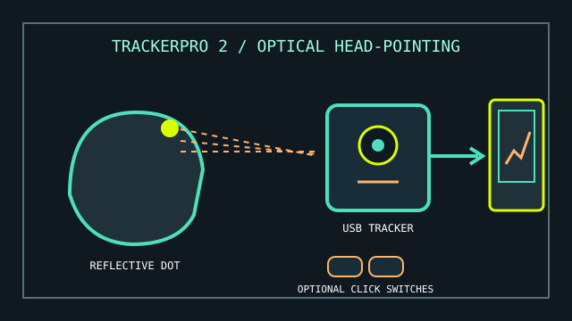

[ HANDS-FREE CURSOR // USB HEAD TRACKING ]
AbleNet TrackerPro 2
A hands-free mouse that tracks a reflective marker on the user’s head and maps small head movements to cursor movement.

MODEL IDENTIFICATION: TrackerPro 2 hands-free mouse (AbleNet product identifier commonly listed as 12060100). Confirm unit label and hardware revision before sourcing replacement markers or cables.
Model specifications
| Catalog leaf | Adaptive and switch-access controls |
|---|---|
| Exact model / identifier | AbleNet TrackerPro 2 head-tracking mouse. |
| Mechanism and primary specifications | USB-connected optical sensor tracks a reflective marker worn on the user’s head; two switch sockets can provide left- and right-click actions. Manufacturer quick-start instructions specify a working position about 12–36 inches (30–91 cm) from the tracker. |
| Host interface and compatibility | USB Type-A host connection; product instructions describe use with Windows, macOS, and ChromeOS computers. Dwell selection can use supported OS accessibility features or separate compatible software. |
| Revision identification | Record marker style/placement, distance, cursor-speed switch position, host OS, and whether the click jacks or dwell access are used. |
Compatibility, setup & limitations
- Requires a visible reflective marker and suitable line of sight; glare, marker displacement, sensor placement, or excessive distance can interrupt tracking.
- Movement controls the cursor, while selection and dragging need the switch jacks, dwell access, or another compatible method. This is not a complete hands-free workflow until clicking and typing are configured.
- Although USB mouse input is broadly compatible, the manufacturer’s tested OS list and current access-software support should be checked before deployment on a new computer.
- Positioning and cursor speed require individual setup; the guide’s nominal sensor distance is not a substitute for confirming full screen reach and comfortable controlled movement.
Preservation and service
Keep reflective markers, USB lead, mount, and switch adapters together. Clean the sensor window and inspect the cable before changing hardware settings.
Record a known-good marker position, user distance, speed setting, and click method; repeat calibration after moving the sensor or display.
Manufacturer and product sources
- AbleNet — TrackerPro 2 quick-start guide (PDF)Manufacturer setup, distance, USB connection, reflective marker, and switch-click guidance.
- Assistive Technology Network — TrackerPro 2Independent product overview and access-system details.
For current replacement accessories and host support, verify with AbleNet using the unit’s label and guide revision.